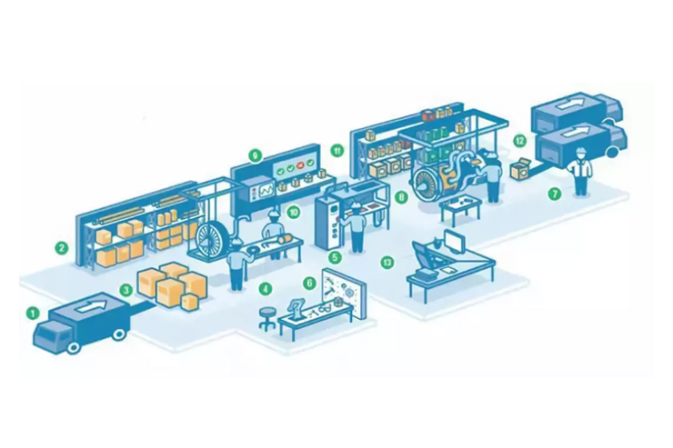

Техническая эксплуатация оборудования в торговле и общественном питании
Умение - везде нйадет применение!
Квалификация: Техник-механик
На базе 9 кл. – 2г. 10 мес.
На базе 11 кл. – 1г. 10 мес.
Cфера деятельности:
Специалисты в области обслуживания и сервиса оборудования общественного питания и торговли, пищевой промышленности. Занимаются установкой, наладкой испытанием, сдачей в эксплуатацию, а также осуществлением текущего ремонта базовых моделей механического и теплового оборудования.